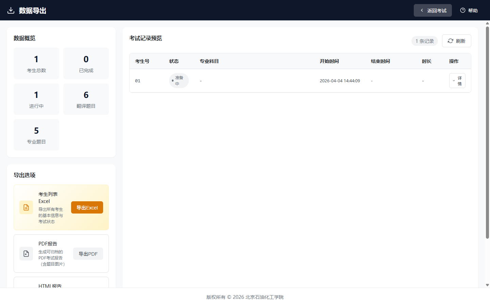

数据导出使用指南
Exam Data Export Guide · 统计、预览与多格式导出
功能概述

图 1：考试导出页面 — 统计概览、导出选项与记录预览
数据导出页面（路由 /export）提供考试数据的统计分析、记录预览和多格式导出功能。页面分为左侧面板（统计 + 导出选项）和右侧面板（记录预览表格）。
- 数据概览：5 个统计卡片实时显示考生和题目数据
- 三种导出格式：CSV 考生列表、PDF 报告、HTML 报告
- 记录预览：表格展示所有考生记录，支持展开查看题目详情
- 图片预览：点击题目图片可放大查看
数据概览
页面左侧顶部显示 5 个统计卡片，数据从后端实时加载：
| 统计项 | 数据来源 | 说明 |
|---|---|---|
| 考生总数 | /exam-api/stats/overview | 系统中所有考生的总数 |
| 已完成 | /exam-api/stats/overview | 状态为"已完成"的考生数 |
| 进行中 | /exam-api/stats/overview | 状态为"进行中"的考生数 |
| 翻译题目 | /exam-api/stats/overview | 题库中翻译题目的总数 |
| 专业题目 | /exam-api/stats/overview | 题库中专业题目的总数 |
导出选项
三种导出格式
| 导出项 | 格式 | 内容 | 适用场景 |
|---|---|---|---|
| 考生列表 CSV | CSV（可用 Excel 打开） | 所有考生的基本信息与考试状态（考生号、状态、科目、时间等） | 快速查看考生名单和状态 |
| PDF 报告 | 完整的考试报告，包含每位考生的翻译题目和专业题目（含图片） | 正式归档、打印存档 | |
| HTML 报告 | HTML（单个文件） | 可打印的 HTML 考试报告，包含题目详情和图片 | 浏览器查看、打印为 PDF |
导出操作
- 在左侧"导出选项"区域选择要导出的格式
- 点击对应的导出按钮（"导出Excel"、"导出PDF"或"导出HTML"）
- 文件会自动下载到浏览器默认下载目录
- 文件名格式：
考生列表_20260403_143025.csv或考试报告_20260403_143025.pdf
提示：CSV 文件可以用 Excel、WPS 或文本编辑器打开。PDF 和 HTML 报告包含完整的题目内容（包括图片），适合归档保存。HTML 报告是单个文件，下载后可直接在浏览器中打开并打印。
记录预览
考试记录表格
右侧面板显示所有考生的考试记录，包含以下列：
| 列名 | 内容 |
|---|---|
| 考生号 | 考生编号（如 01、02、03） |
| 状态 | 考试状态（准备中 / 进行中 / 已完成 / 暂停） |
| 专业科目 | 考生选择的专业科目名称 |
| 开始时间 | 考试开始时间 |
| 结束时间 | 考试结束时间 |
| 时长 | 考试总时长（分钟） |
| 操作 | 展开/收起详情按钮 |
展开查看详情
- 点击某行右侧的"详情"按钮
- 该行下方会展开显示该考生的翻译题目和专业题目详情
- 题目详情包含题号、题目内容（含图片）
- 专业题目还显示科目标签
- 再次点击"收起"按钮关闭详情
图片预览
- 在展开的题目详情中，点击题目图片缩略图
- 图片会以全屏弹窗方式放大显示
- 点击弹窗外的区域或右上角 × 按钮关闭预览
刷新数据
- 点击右上角的"刷新"按钮重新加载考生列表
- 刷新时按钮显示旋转动画和"加载中..."文字
空状态：如果系统中没有考生记录，右侧面板会显示"暂无考试记录"的提示。开始考试后，数据会自动出现在预览表格中。
导出格式对比
| 特性 | CSV | HTML | |
|---|---|---|---|
| 包含题目详情 | 否 | 是 | 是 |
| 包含图片 | 否 | 是 | 是 |
| 可直接打印 | 否 | 是 | 是（浏览器打印） |
| 可用 Excel 打开 | 是 | 否 | 否 |
| 文件大小 | 小 | 中 | 中 |
| 是否需要解压 | 否 | 否 | 否 |
| 适用场景 | 快速查看名单 | 正式归档 | 浏览器查看/打印 |